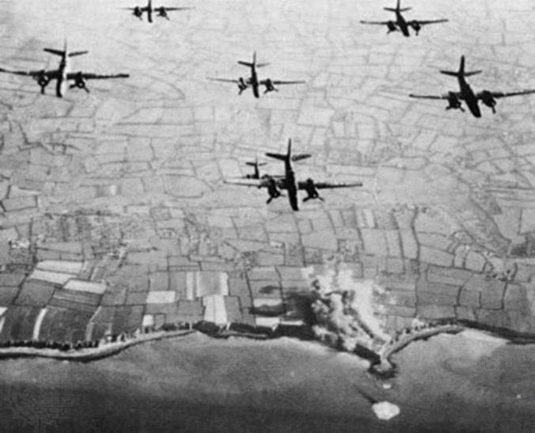

Bombardements inutiles en Normandie en 1944 : les « road-blocks » (1ère partie)
par Yves LOIR
La composante aérienne d’« Overlord »
Parmi les conditions préalables requises pour la réussite du débarquement , figurait tout d'abord la double nécessité d'un affaiblissement considérable de la puissance aérienne allemande et de l'impossibilité pour l'armée allemande de déplacer des unités stationnées en Europe de l'Ouest et notamment en France pour les diriger vers les zones de débarquement, le dispositif militaire allemand statique en place dans celles-ci n'étant en mesure, loin de là, tant au niveau quantitatif que qualitatif, de résister par ses moyens propres à un assaut.
Les deux conditions absolument impératives qui viennent d'être rappelées, nécessitaient tout d'abord la possession par les alliés d'une puissance aérienne surclassant d'une manière décisive celle des Allemands et d'autre part l'engagement de moyens propres à empêcher ou retarder, le moment venu, le déplacement d'unités allemandes évoqué précédemment. La maîtrise aérienne anglo-américaine absolue fut essentiellement rendue possible grâce à la puissance industrielle des Etats-Unis qui put produire en très grand nombre les avions de tous types équipant les forces aériennes alliées. La réalisation de la seconde condition, relative aux déplacements des réserves allemandes, nécessitait la destruction préalable la plus complète possible de leurs moyens de transport notamment ferroviaires. Très tôt, début 1943, des plans sont établis, côté allié, pour atteindre cet objectif par une campagne de bombardement intensifs contre les infrastructures ferroviaires principalement françaises.
Les plans aériens généraux accompagnant « Overlord » - le « Transportation plan »
Après la conférence d'Anfa, dès que la planification du débarquement est engagée, sa composante aérienne est définie à partir des conditions préalables à la réussite du débarquement établies par le Général Morgan :
La directive « Pointblank » publiée en juin 1943 vise à « atteindre et maintenir une supériorité aérienne de telle sorte que les forces aériennes allemandes soient rendues incapables d'interférer efficacement avec les opérations alliées. »
Un Fw 190 de la Luftwaffe, un des chasseurs monomoteurs allemands visés par la directive Pointblank
Cette directive est complétée par l'« Overall Air Plan » dressé par le Général Morgan (planificateur d'«Overlord») durant l'été 1943.
Carte route bombardiers U.S vers la Normandie le 06-06-44 ( road-blocks ) ayant occasionné environ 3000 morts civils inutiles ( le "Bomber command" britannique était également impliqué )
Carte route bombardiers U.S vers la Normandie le 06-06-44 ( road-blocks ) ayant occasionné environ 3000 morts civils inutiles ( le "Bomber command" britannique était également impliqué )
Dès le début 1944 un plan précis consistant à paralyser le système ferroviaire français pour empêcher l'envoi de renforts allemands, le moment venu, de l'intérieur vers les zones de débarquement est établi par Solly Zuckerman, conseiller scientifique du Général Tedder, adjoint d'Eisenhower, fin janvier 1944, s'inspirant d'abord en profondeur du rapport de Solly Zuckerman lui-même ( Rapport« Bombing Survey Unit » –B.S.U – Structure crée en 1943 ) sur les effets des bombardements sur le théâtre méditerranéen . C'est le « Plan Transport » (« Transportation Plan »). L'exécution du « Transportation Plan » avant et pendant « Overlord » va démontrer une certaine efficacité militaire même s’il est accompagné d'importantes pertes civiles françaises qui susciteront une très forte préoccupation chez les dirigeants britanniques, chez le Premier Ministre britannique Churchill ainsi que chez le Secrétaire au Foreign Office A. Eden, notamment, même si cette préoccupation n'est pas exclusivement d'ordre humanitaire.
Bombardements « road-blocks »
À la fin avril 1944, les planificateurs du 21ème groupe d'armées de Montgomery identifient trente-six villes essentiellement normandes devant être « lourdement bombardées les DDay et DDay + 1 pour créer des road blocks » Comme l'a affirmé l'Historien américain Stephen Alan Bourque dans un ouvrage qu'il a consacré aux bombardements sur la France en 1944 « En d'autres termes l'Armée voulait que l'aviation pulvérise des localités françaises pour ralentir les mouvements de troupes allemandes ».1
Le 20 mai, Montgomery s'implique directement en recommandant une telle opération. Le même jour Montgomery appelle le Britannique Leigh Mallory commandant les forces aériennes anglo-américaines en 1944, pour lui demander s’il avait lui-même changé d'avis (approbateur) sur le projet de bombardement massif des villes normandes évoqué ci-dessus. Mallory répond par la négative à la question de Montgomery et réaffirme son soutien à celui-ci quant à sa détermination à procéder aux bombardements « road blocks ». Sa volonté « d'aplatir » les bourgs normands2 -pour reprendre ses propres termes – répondait, selon lui, à une nécessité. Un ensemble de considérations exposé ci-après, contredit de manière absolue, le bien-fondé de cette soi-disant « nécessité ».
L'exécution du plan « road blocks » à partir du 6 juin va avoir des conséquences dramatiques pour les populations normandes. Tenu en échec à Caen qu'il comptait prendre le soir du 6 juin, Montgomery le chef du 21ème groupe d'armées allié, décide de frapper un grand coup contre les ...civils caennais : le 7 juin de minuit à 3 heures du matin, 1065 quadrimoteurs britanniques, aux côtés des forces aériennes américaines, poursuivent la destruction des villes normandes déjà bombardées la veille.
Bombardements dévastateurs le 6 juin 1944
Le nombre de civils tués à l'occasion des premiers bombardements « road-blocks » (avec notamment la destruction quasi-complète de Caen, Lisieux, Saint-Lô Vire, et de très importantes destructions dans de nombreuses autres villes normandes s'élève à plus de 3000, sans compter les très nombreux blessés et les dégâts matériels immenses, comprenant l'anéantissement de sites culturels d'une valeur inestimable comme le bâtiment contenant les Archives départementales de la Manche à Saint-Lô , ou la Bibliothèque de la Faculté de Caen renfermant 160.000 livres et 116.000 publications universitaires détruits lors des bombardements « road blocks » de Caen3...
Lisieux après les bombardements (800 morts civils inutiles)
Inefficacité militaire des « road-blocks » les exemples de Saint-Lo et de Caen
Depuis le début de la seconde guerre mondiale, l'armée de l'Air britannique s'était attachée les services d'un certain nombre de scientifiques, afin d'analyser d'une façon planifiée et rigoureuse, les effets des bombardements aériens ainsi que de conseillers également de formation scientifique qui soient à même de faire des recommandations aptes à rendre plus efficaces les opérations de bombardement aérien menées par eux.
Parmi ceux-ci, penchons-nous sur l'un de ceux qui va se distinguer tout au long de la guerre dans ce domaine, Solly Zuckerman. Né en 1904 au Cap, en Afrique du Sud, il va gagner la Grande Bretagne en 1928 et, au cours de la décennie 1930-1940 va devenir un spécialiste reconnu de l'étude des primates. Au début de la guerre, il va être affecté aux recherches sur les bombardements aériens. À ce titre il va tout d'abord opérer en Grande Bretagne, puis en Afrique (Lybie) ou l'armée britanniques est aux prises avec les germano-italiens. En mars 1943, Zuckerman fait la connaissance à Alger du général américain Eisenhower et de son adjoint, le maréchal de l'air britannique Tedder, ainsi que d'autres hauts responsables des forces aériennes américaines, Spaatz et Doolittle.
Les opérations militaires vont se poursuivre à partir de juillet 1943 en Sicile puis en Italie du Sud. Au cours de ces opérations, Tedder demande des suggestions à Zuckerman pour rendre les bombardements aériens plus efficaces. Celui-ci insiste beaucoup sur l'importance des cibles ferroviaires à détruire et rejette les bombardements de nœuds routiers (« road blocks ») qu'il considère inefficaces sur le plan militaire. En prévision d’« Overlord » ,Zuckerman revient en Grande Bretagne en décembre 1943. Dès son arrivée, il va être immédiatement impliqué de près dans la planification des opérations aériennes préparatoires d'« Overlord » et notamment, à partir de janvier 1944 , à la conception du « Plan Transport » (« Transportation Plan ») qui vise à détruire les nœuds ferroviaires français (centres de triage , dépôts de locomotives ,centres de réparation ferroviaire…) pour paralyser le moment venu les mouvements de troupes allemandes de l'intérieur vers les zones du futur débarquement. Comme sur le théâtre méditerranéen, Zuckerman va déconseiller, en raison de leur inefficacité, les raids sur les nœuds routiers (« road blocks »). Le 5 mai 1944, dans un rapport rédigé par lui, il indique notamment que :
« Dans l'ensemble, ces attaques ne semblent pas capables de produire autre chose que des retards mineurs dans le trafic ennemi (…) Il apparaît clairement que ces opérations contre des villages ne peuvent qu'avoir de très légers effets sur les communications ennemies. La forte densité du système routier couvrant l'ensemble de la Normandie offre de telles possibilités de routes alternatives que l'ennemi peut même ne pas se donner la peine de déblayer les dégâts »
L'utilité et l'efficacité militaires des bombardements « road blocks » sont contestées jusqu'au sein de l'AEAF (haut commandement aérien anglo-américain) par les hauts responsables du bombardement aérien, Spaatz, Doolittle, Tedder, qui obéiront néanmoins aux ordres de Leigh Mallory , couverts par Montgomery et Eisenhower . Fortement déconseillés par l'expert Zuckerman qui avait une longue expérience dans le domaine du bombardement aérien , contestés par les hauts responsables précités avant qu'ils ne soient exécutés , les bombardements « road blocks » vont montrer leur inefficacité militaire après qu'ils auront été réalisés , cette inefficacité étant reconnue par l'un des principaux promoteurs de ce type de bombardement , le Maréchal britannique Leigh Mallory lui-même , par des témoignages allemands , et par l'évolution de la situation militaire en Normandie à partir du 6 juin 1944.
Le 8 juin 1944, après les premiers bombardements « road blocks » qui ont causé la mort de plusieurs milliers de civils normands, une réunion réunissant les hauts responsables des forces aériennes anglo-américaines, a lieu pour faire un premier « bilan » de ces opérations. Lors de cette réunion, Leigh Mallory signale que les bombardements « road blocks » ont échoué et n'ont pas empêché les premiers mouvements de réserves allemandes vers la tête de pont, ce à quoi ils étaient censés s'opposer4.
Par ailleurs, l'interrogatoire de prisonniers allemands appartenant à 11 divisions ayant rejoint la Normandie est sans appel : les principales voies routières traversant les « choke-points » (points d'étranglement du trafic) résultant des bombardements « road blocks », ont été sommairement et rapidement déblayés ou tout simplement contournés par des routes secondaires ou à travers champs.
Ce constat est confirmé par le témoignage de responsables militaires allemands présents dans la région. C'est ainsi que Friedrich Hayn de l'État- major du 84ème corps d'armées allemand (commandé par le Général Marcks) stationné à Saint-Lô en juin 1944 déclara après la guerre :
« Les pertes allemandes (jusqu'au 20 juin) étaient pour ainsi dire nulles ( …) Il faut réfuter le fait que les décombres accumulées dans les nœuds routiers aient dérangé d'une façon déterminante le trafic et le ravitaillement de la Werhmacht. Naturellement elles l'ont gêné mais le point décisif fut que la supériorité aérienne absolue des alliés obligea le trafic à s'effectuer pendant la nuit, et que les lourdes pertes arrêtèrent la concentration de troupes quand ces mouvements avaient lieu de jour (…) Même le pont de Vire à proximité de la gare était remis en état dès le premier soir » 5
Ajoutons un témoignage, français celui-là, à ceux qui précèdent et qui est relaté par le général Béthouard dans ses mémoires de guerre. Au début juin 1944, il se trouve à Londres aux côtés du Général De Gaulle, venu d'Alger en Grande Bretagne peu avant le débarquement. Après les premiers bombardements « road blocks » des 6, 7 et 8 juin qui ont fait des milliers de victimes civiles en Normandie, Béthouard rencontre un pilote français, venant de participer aux opérations aériennes en Normandie « Le 9 juin au matin – relate-t-il, je reçois le témoignage direct et bouleversant d'un officier français servant dans la R.A.F, le colonel Livry-Level. Il est normand, sa famille est restée au pays.
Il connaît le terrain mieux que personne. Depuis trois nuits, il mitraille les colonnes et convois allemands « Je ne vois personne, mon général, les routes sont vides, les Allemands passent par les chemins creux que vous connaissez bien. Aucun ne passe par les grands carrefours que j'ai vu bombarder et ou ne meurent que des Français. J'ai vu tomber en quarante minutes 500 tonnes de bombes sur Coutances, autant sur Vire. J'ai vu la fumée de Lisieux s'étendre sur 20 kilomètres. Mon général, c'est du massacre, arrêtez cela. »6
Béthouard rencontre quelque temps après, le Général Bedell-Smith, l'adjoint d'Eisenhower et lui raconte sa conversation avec Livry-Level, en reprenant ses arguments : « Les Allemands évitent les grands carrefours repérés, dangereux et généralement situés dans les villes ». Bedell-Smith, apparemment sensible à ses arguments, lui promet d'intervenir, mais il est clair qu'au-dessus de lui, les décisions sont prises pour la poursuite des bombardements « road-blocks ».
Ainsi, sur le plan militaire, les « barrages routiers » (« road-blocks ») destinés à stopper ou retarder les mouvements de troupes allemandes par voie routière vers les zones de débarquement, furent un échec total.
Au-delà des témoignages irréfutables qui viennent d'être évoqués, l'évolution des opérations militaires immédiatement après le 6 juin, dans la zone proche de la tête de pont, le prouve d'une façon qui ne peut être contestée. Pour franchir la quinzaine de kms séparant Ouistréham de Caen qui devait être conquis le soir du 6 juin, il faudra plus d'un mois. La ville ne sera en effet atteinte par Montgomery que le 9 juillet. En ce qui les concerne, les Américains partis de la plage d'Omaha dans le Calvados, le 14 juin auront également besoin de plus d'un mois pour progresser de 40 kms et atteindre Saint-Lo (le 19 juillet), cette ville devant être investie au jour « J+9 » soit le 15 juin selon les prévisions. Les renforts allemands venant de l'intérieur auront la possibilité, aux côtés des troupes stationnées sur le littoral, de stopper rapidement l'avancée britannique et américaine dans ces secteurs sans être le moins du monde gênées dans leur progression par les décombres des villes normandes détruites. La destruction des villes de Caen et de Saint-Lô avec les milliers de morts civils qui l'ont accompagnée n'a donc en rien ni empêché ni même retardé l'arrivée et l'irruption des forces allemandes à proximité de la tête de pont alliée.
Fin de la première partie – Suite et fin dans le prochain numéro de Méthode.
Y.L.
NOTES
1. Stephen Alan Bourque- Beyond the beach-The allied war against France -Naval Institute Press- Annapolis-U.S.A Maryland -USA- 2018- p.232
2. Propos tenus par Leigh Mallaury in « Les Français sous les bombes alliées » d'Andréw Knapp – Taillandier- 2014 -p.151
3. « Times » – 19 juillet 1944 -cité par Andrew Knapp -Les Français sous les bombes alliées- p.453
4. Solly Zuckerman- From apes to Warlords – Hamish Hamilton – London- 1978 -p. 266
5. Maurice Lantier – Saint-Lô au bûcher – Saint-Lô -Imprimerie de Basse Normandie-1984 – p.262
6. Général Béthouard – Cinq années d'espérance – 1939-1945 – Plon- 1948- p. 245 -246
7. Harry Coles-Albert Weinberg – Civils Affairs -Soldiers become governors –Washington- 1986 – p. 727 - 728
Partager cette page